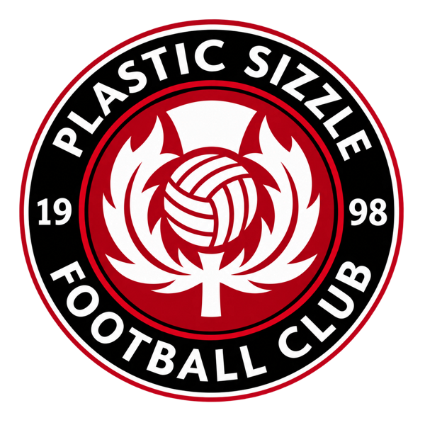

Skip to content
EST. 1998
•
THE CLUB ARCHIVE

A history worth continuing
PLASTIC
SIZZLE
Football • Friendship • Since 1998
Home
History
Players
Gallery
Memories
Stadia
Post-Match
Honours
Past Standings
In Memoriam
Loading the club archive…